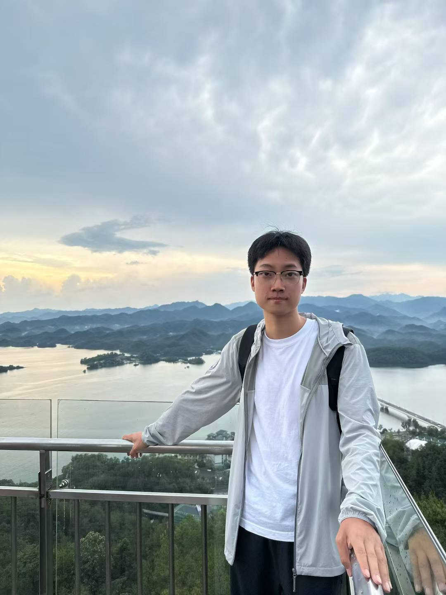
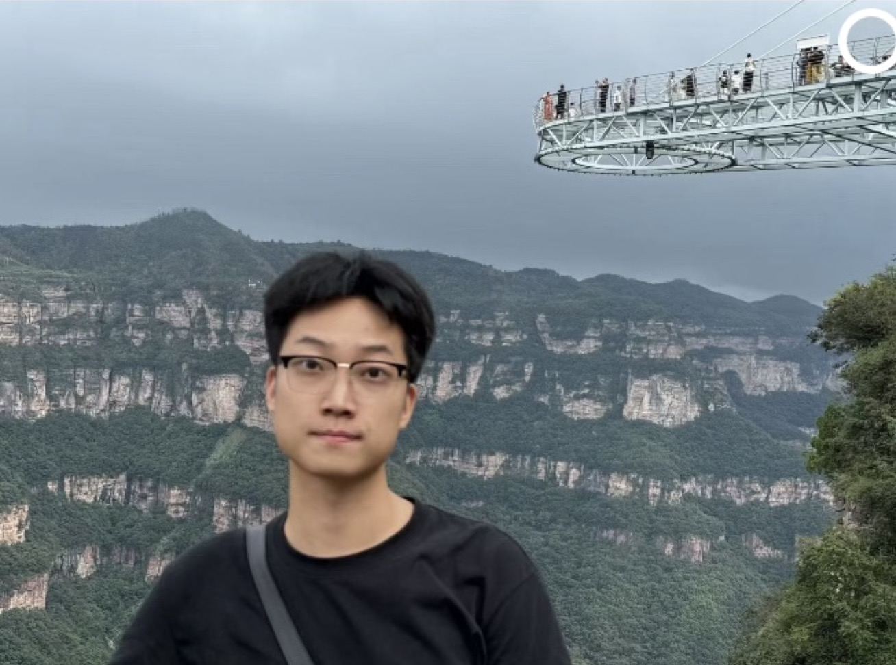
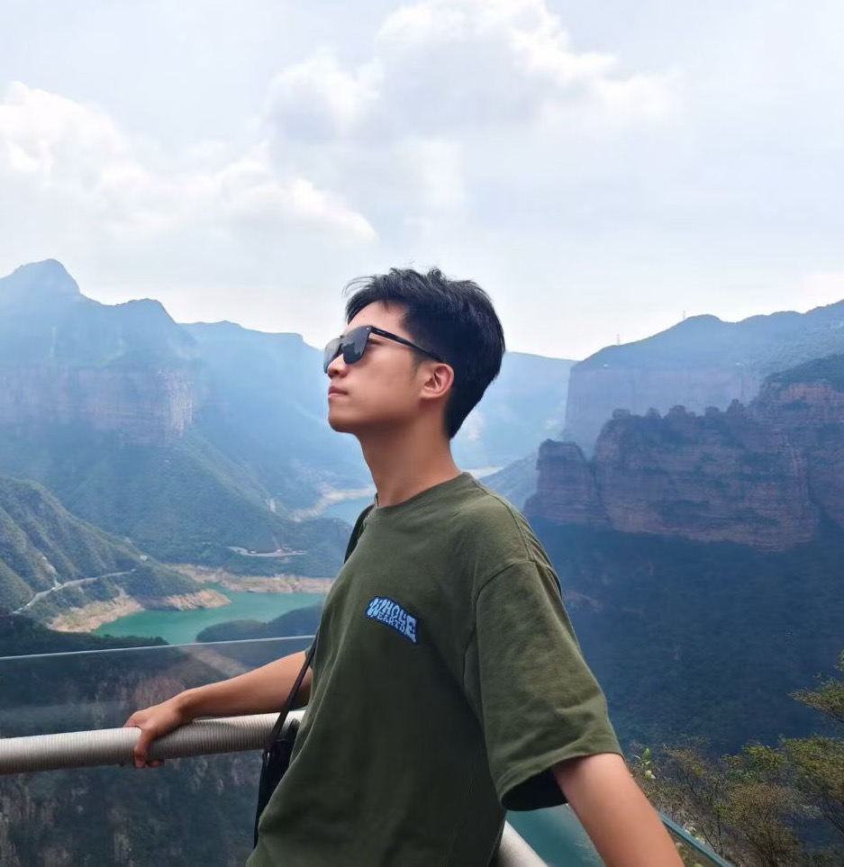

Shiyu Tan 谈诗语
M.S. Student · CAD Generation · 3D Vision
 School of Software, Tsinghua University
School of Software, Tsinghua University
I study intelligent geometric modeling at the intersection of computer vision, CAD reconstruction, and vision-language understanding.
↓


Biography
I am a first-year Master's student at the School of Software, Tsinghua University, co-advised by Prof. Enya Shen and Prof. Jianmin Wang.
I had the privilege of spending my high school years at High School Affiliated to Nanjing Normal University. My academic journey then took me to the Hunan University, where I spent four years immersed in an enriching environment at the 3DXLab under the supervision of Prof. Yizhen Lao.
I am actively seeking remote research internships and prospective overseas Ph.D. opportunities. My research interests broadly lie in Computer Vision, 3D reconstruction, and robotics, with a primary focus on intelligent generation of Computer-Aided Design (CAD) models.
I am particularly interested in the intersection of Vision-Language Models (VLM) and geometric processing. My current work focuses on sequence-based diffusion models and intelligent geometric modeling to align visual features with CAD semantics.
Connect
News
-
🎉 Our paper Img2CADSeq has been accepted to SIGGRAPH 2026.
-
📖 I started my Master's study at the School of Software, Tsinghua University.
-
🎉 Our paper IOVS4NeRF was accepted to ICASSP 2025.
Publications
Bold: First author · † Equal contribution · * Corresponding author

Honors & Awards
- Project Lead, Hunan Provincial Natural Science Foundation for Youth Students
- Outstanding Graduate of Hunan Province & Student Pace-setter of Hunan University
- National Scholarship & University Merit Student of Tsinghua University and Hunan University
- Host for Tsinghua University's Collective Construction Conference, Doctoral Forum Ceremony, and related events
- Core Member of the SAISS Global Strategic Studies Association at Tsinghua University
- Associate Editor of the Tech Zone Tsinghua Journal (English Edition)